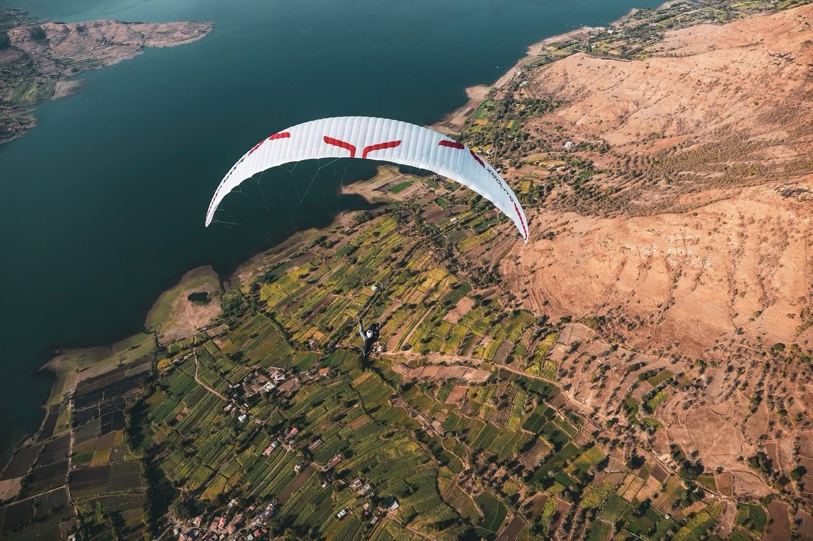
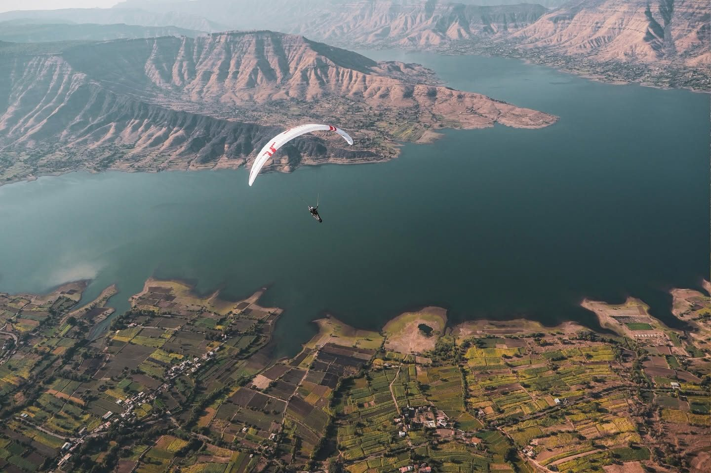
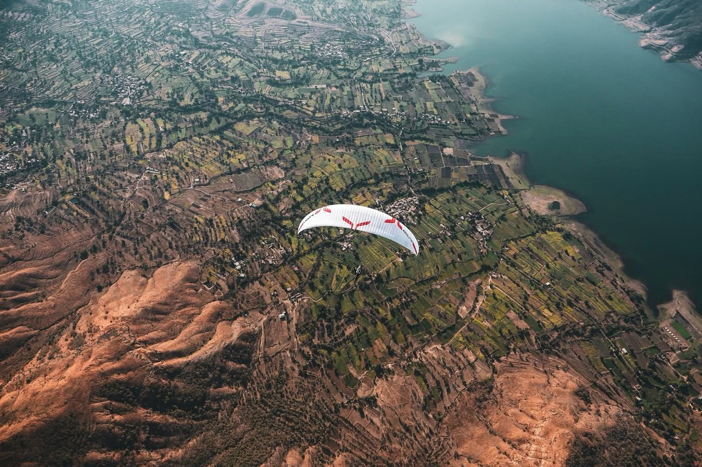

01
Viaje a Panchgani
Del al de 2027
Desde[to supply]
Reserva una plazaLa tierra de las cinco colinas: mesetas volcánicas, acantilados abruptos y térmicas potentes, a dos horas de Pune.
Foto de Michael Gebert / @flywithandy_paragliding
DesplázatePanchgani se encuentra en Sahyadri, la cordillera que recorre la costa oeste de India a unos 100 km tierra adentro, sobre las mesetas volcánicas de Deccan: cimas planas y acantilados verticales abruptos. Vistasp Kharas creció aquí y lleva más de diez años volando allí. Dice que es mucho más técnico que Bir: un vuelo de 30 km en Panchgani vale tanto como uno de 100 km en Bir Billing.
El despegue está a unos 1.100 a 1.200 m, y en plena temporada los pilotos suben a 3.000 a 4.000 m, así que en un buen día la altura sobre el suelo supera a la de Bir.
Los acantilados se calientan durante la mañana y lanzan térmicas fuertes. Hay inversiones en varias capas, el viento puede cambiar de dirección cada mil metros y cada valle y cada hondonada tiene su propio viento.
Cada tarde entra la brisa marina desde la costa, así que la jornada de vuelo se organiza en torno a ella. En el tiempo que queda para el vuelo de cross, es glorioso.
De noviembre a marzo. El viento empieza del nor-noreste y rola al sureste hacia la primavera, así que el despegue se elige en consecuencia. El viaje vuela en febrero, en pleno corazón de la temporada.
Si bajas de 1800 metros, empieza a buscar un aterrizaje seguro. No te acerques al terreno a menos que sepas muy bien lo que haces.
Panchgani celebró su primera pre Copa del Mundo en 2019, con casi 100 pilotos, y la segunda, la primera organizada por la Paragliding Association of India, en 2024. La línea local más larga recorre unos 100 km hacia el noroeste hasta Kamshet.
Ocho días en Panchgani, dos días después de que termine el último viaje a Kenia.
Del al de 2027
Desde[to supply]
Reserva una plaza«Reserva una plaza» envía una consulta para esa salida.






Vistasp Kharas recorre Panchgani antes de la pre Copa del Mundo que se celebró allí, y explica qué exige el sitio a un piloto y qué esperar del vuelo de competición en India.
Las respuestas sobre el sitio son de Vistasp Kharas, en el pódcast. Si tu pregunta no está aquí, hazla en la llamada.
Para pilotos capaces de despegar con viento fuerte y condiciones térmicas fuertes. Vistasp Kharas, que lleva más de diez años volando en Panchgani, recomienda un curso SIV: las térmicas pueden ser potentes y también hay viento. No enviaría a un piloto acostumbrado solo al aire alpino y con poco conocimiento del viento, porque a sotavento el sitio no perdona.
El nivel de piloto para el viaje es [to supply].
Una B alta o una C va muy bien, e incluso una B baja se defiende; con una A te vas a frustrar un poco. No traigas tu mejor ala: el despegue de Harrison's Folly es de polvo rojo, y los pilotos locales tienen una segunda ala que ya está roja.
El despegue está a unos 1.100 a 1.200 m, y en plena temporada los pilotos suben a 3.000 a 4.000 m. La regla local: por debajo de 1.800 m, empieza a buscar un aterrizaje seguro, y mantente lejos del terreno a menos que sepas exactamente qué está haciendo el viento.
El aterrizaje arriba, en la meseta principal, es fácil a última hora de la tarde, una vez que sabes de dónde viene el viento. En los valles, aterriza cerca de una carretera en un campo ya cosechado: nunca en cultivos en pie ni en caña de azúcar. Los tendidos eléctricos son aéreos, así que busca los postes y sus sombras. La gente de los pueblos es amable, y un jeep compartido de vuelta al pueblo sale barato.
Panchgani está a unas dos horas por carretera de Pune y a cuatro horas y media o cinco de Mumbai. No hay tren a Panchgani: toma el tren de Mumbai a Pune, unas cuatro horas, y luego un taxi o un autobús.
Lo que cubre el precio del viaje es [to supply].
El depósito, cuándo se paga el resto y qué pasa si cancelas están en las condiciones de reserva. Léelas antes de reservar y contrata un seguro de cancelación de viaje.
¿Listo para Touch The Sky With Glory?
Tanto si eres un piloto de 10 horas que le echa el ojo a su primer 50 como si eres un veterano del cielo en busca de tu próximo récord mundial, nos especializamos en convertir la ambición en horas de vuelo. Esta llamada de presentación, relajada y sin expectativas, te ayuda a despejar las incógnitas hablando claro.
Repasaremos:
Traducido del inglés. Leer la página en inglésInformar de un error de traducción
Nuestras páginas de condiciones, privacidad y seguridad están en inglés. La versión en inglés es la vinculante.